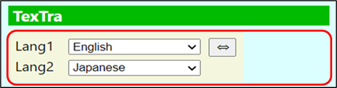
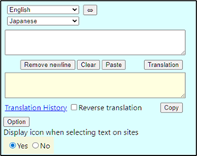
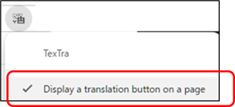
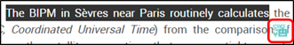
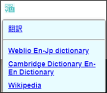
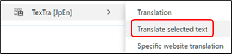
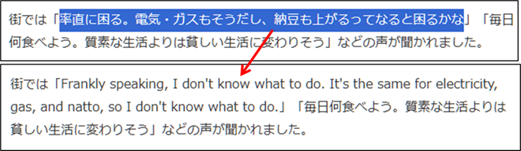
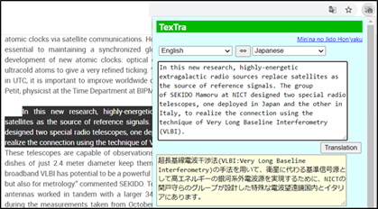

Translation and Dictionary Lookup
1. Select a
language pair from the pop-up
menu.

2. Configure the setting to display the TexTra
icon on the
website.
On popup

Icon right-click menu

3. Select the text you want to
translate.
The
TexTra icon will
appear.
(Will
not appear when you
select
a
too long
text)

4. The translation or dictionary look-up results will
be
displayed.
・ Dictionary
lookup
Displays
a dictionary lookup link when hovering over the
icon.

* For
adding sites, please refer to the "Dictionary Lookup"
section.
Translate selected
text
Select
text on the site,
then
choose “Translate selected text” from the right-click
menu.

The
selected text is
translated.

You can also translate by selecting the text on the site
and
pressing a TexTra
button.

* There are
some cases that selected text is not displayed
when the TexTra button is pushed on such as PDF
Files.
In those cases, please try to call the function
from the context
menu.